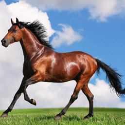
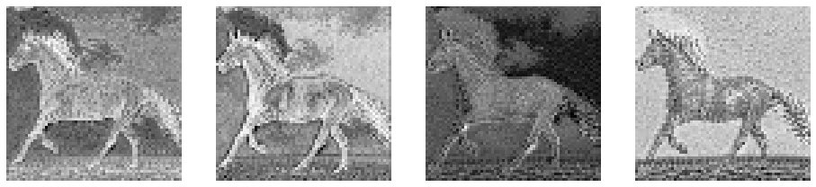
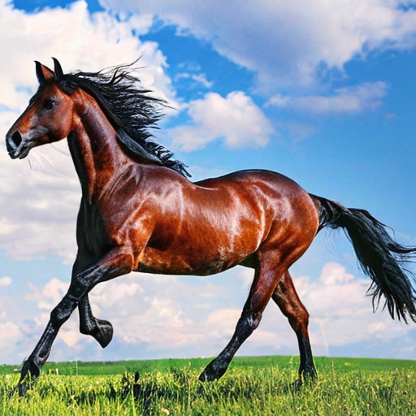
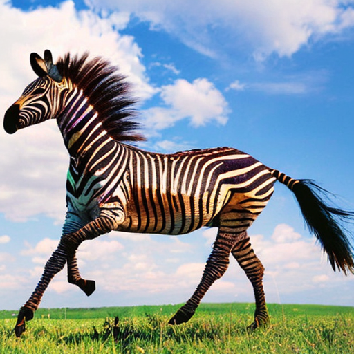
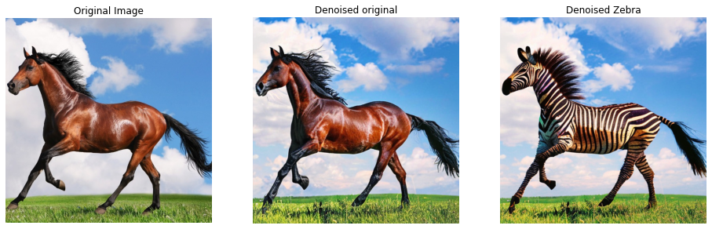
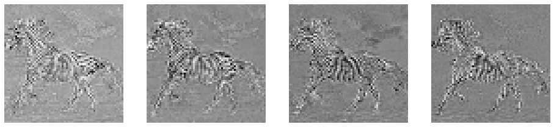
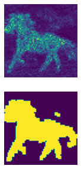
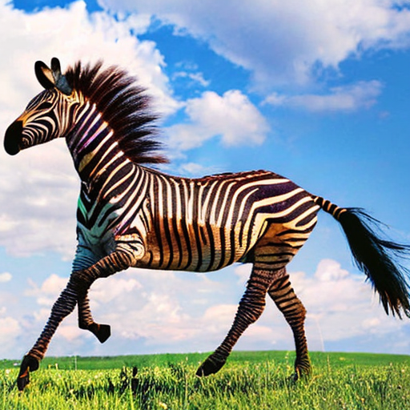
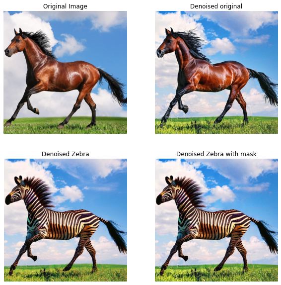

from pathlib import Path
from PIL import Image
from tqdm.auto import tqdm
import numpy as np
import matplotlib.pyplot as plt
import torch
from torchvision import transforms as tfms
from torch import autocast
from diffusers import DDIMScheduler, LMSDiscreteScheduler
from transformers import CLIPTextModel, CLIPTokenizer
from diffusers import AutoencoderKL, UNet2DConditionModel
from transformers import loggingNotebook to explore DiffEdit
Notebook to try out the DiffEdit methodology
This follows the paper: http://arxiv.org/abs/2210.11427
The first part of the notebook is setup to generate image masks based upon the differences in images generated by starting with the same noised image and denoising it with two different prompts, the first one the prompt that goes with the image, the second a prompt related to a “target” image, which is what it is desired to change some aspect of the image into.
The methodology in the paper is not very well described and so a few alternative approaches are considered
#!pip install accelerate# Note that this step is helpful to avoid verbose warnings when loading the text encoder
logging.set_verbosity_error()# Set device
torch_device = "cuda" if torch.cuda.is_available() else "cpu"# Load the tokenizer and text encoder
tokenizer = CLIPTokenizer.from_pretrained("openai/clip-vit-large-patch14", torch_dtype=torch.float16)
text_encoder = CLIPTextModel.from_pretrained("openai/clip-vit-large-patch14", torch_dtype=torch.float16).to(torch_device)# Load the VAE and Unet
vae = AutoencoderKL.from_pretrained("stabilityai/sd-vae-ft-ema", torch_dtype=torch.float16).to(torch_device)
unet = UNet2DConditionModel.from_pretrained("CompVis/stable-diffusion-v1-4", subfolder="unet", torch_dtype=torch.float16).to(torch_device)# Create a DDIM scheduler
ddim_sched = DDIMScheduler(beta_start=0.00085,
beta_end=0.012,
beta_schedule='scaled_linear',
clip_sample=False,
set_alpha_to_one=False)# Create a LMS scheduler
scheduler = LMSDiscreteScheduler(beta_start=0.00085, beta_end=0.012, beta_schedule="scaled_linear", num_train_timesteps=1000)Add Functions
def prompt_to_embedding(prompt: str, torch_device):
text_input = tokenizer(prompt, padding="max_length", max_length=tokenizer.model_max_length, truncation=True, return_tensors="pt")
with torch.no_grad():
embeddings = text_encoder(text_input.input_ids.to(torch_device))[0]
return embeddingsdef pil_to_latent(input_im):
# Single image -> single latent in a batch (so size 1, 4, 64, 64)
with torch.no_grad():
latent = vae.encode(tfms.ToTensor()(input_im).unsqueeze(0).half().to(torch_device)*2-1) # Note scaling
return 0.18215 * latent.latent_dist.sample()def latents_to_array(latents):
latents = 1 / 0.18215 * latents
with torch.no_grad():
image = vae.decode(latents).sample
# Create image array
image = (image / 2 + 0.5).clamp(0, 1)
image = image.detach().cpu().permute(0, 2, 3, 1).numpy()
images = (image * 255).round().astype("uint8")
# At this point, this is a single-item array of image data, so return only the item
# to remove the extra diemension from the returned data
return images[0]def latents_to_pil(latents):
# bath of latents -> list of images
image = latents_to_array(latents)
pil_imagea = Image.fromarray(image)
return pil_imageadef show_latents(latents):
fig, axs = plt.subplots(1, 4, figsize=(16, 4))
for c in range(4):
axs[c].imshow(latents[0][c].cpu(), cmap='Greys')
axs[c].axis('off')def load_image(path_to_image, size):
path_to_img = Path(path_to_image)
assert path_to_img.is_file(), f"No file found {path_to_image}"
image = Image.open(path_to_img).convert('RGB')
return imagedef denoising_loop(latents, text_emb, scheduler, g=7.5, strength=0.5, steps=50, dim=512, start_step=10, torch_device="cuda"):
with autocast(torch_device):
noise_preds = torch.tensor([], device=torch_device)
for i, t in enumerate(scheduler.timesteps):
if i > start_step:
#print(f"step: {i}")
latent_model_input = torch.cat([latents] * 2)
latent_model_input = scheduler.scale_model_input(latent_model_input, t)
with torch.no_grad():
noise_u,noise_t = unet(latent_model_input, t, encoder_hidden_states=text_emb).sample.chunk(2)
noise_pred = noise_u + g*(noise_t - noise_u)
noise_preds = torch.concat([noise_preds, noise_pred])
latents = scheduler.step(noise_pred, t, latents).prev_sample
return latents, noise_predsdef show_image(image, seed=None, scale_by=0.5):
if seed is not None:
print(f'Seed: {seed}')
return image.resize(((int)(image.width * scale_by), (int)(image.height * scale_by)))def add_noise_to_image(latents, seed, scheduler, start_step):
torch.manual_seed(seed)
noise = torch.randn_like(latents)
noised_latents = scheduler.add_noise(
original_samples=latents,
noise=noise,
timesteps=torch.tensor([scheduler.timesteps[start_step]]))
return noised_latentsdef show_images(nrows, ncols, images, titles=[], figsize=(16, 5)):
num_axes = nrows*ncols
num_images = len(images)
num_titles = len(titles)
fig, axs = plt.subplots(nrows, ncols, figsize=figsize)
flt_ax = axs.flat
for c in range(num_axes):
if c == num_images: break
flt_ax[c].imshow(images[c])
flt_ax[c].axis('off')
if c < num_titles:
flt_ax[c].set_title(titles[c])Define parameters for analysis
resolution = 512
def_steps = 70
def_g = 7.5
def_strength = 0.5
def_sch = scheduler
start_step = 20Load base image and create latents
path_to_image = "/home/images/horse_1_512.jpg"
image = load_image(path_to_image, resolution)
latents = pil_to_latent(image)# show the base image
show_image(image)
# Plot the latents
show_latents(latents)
Define Prompts and create embeddings
#base_prompt = "A horse running on grass under a cloudy blue sky"
#target_prompt = "A zebra running on grass under a cloudy blue sky"
base_prompt = "A horse"
target_prompt = "Zebra"
unguided_prompt = [""]base_prompt_emb = prompt_to_embedding(base_prompt, torch_device)
target_prompt_emb = prompt_to_embedding(target_prompt, torch_device)
unguided_prompt = prompt_to_embedding(unguided_prompt, torch_device)base_emb_pair = torch.concat([unguided_prompt, base_prompt_emb])
target_emb_pair = torch.concat([unguided_prompt, target_prompt_emb])Set inference timesteps
def prepare_scheduler_noise_image_and_denoise(latents, text_emb, steps, start_step, scheduler, seed, g, dim, device):
timesteps = scheduler.set_timesteps(steps)
strength=0.5
noised_latents = add_noise_to_image(latents, seed, scheduler, start_step)
dn_latents, noise = denoising_loop(noised_latents, text_emb=text_emb, scheduler=scheduler, g=g, strength=strength, steps=70,
dim=dim, start_step=start_step, torch_device=device)
return dn_latents, noise
dn_base, noise_base = prepare_scheduler_noise_image_and_denoise(latents,
text_emb=base_emb_pair,
steps=def_steps,
start_step=30,
scheduler=def_sch,
seed=100,
g=7.5,
dim=resolution,
device=torch_device)/opt/conda/lib/python3.8/site-packages/diffusers/schedulers/scheduling_lms_discrete.py:155: IntegrationWarning: The maximum number of subdivisions (50) has been achieved.
If increasing the limit yields no improvement it is advised to analyze
the integrand in order to determine the difficulties. If the position of a
local difficulty can be determined (singularity, discontinuity) one will
probably gain from splitting up the interval and calling the integrator
on the subranges. Perhaps a special-purpose integrator should be used.
integrated_coeff = integrate.quad(lms_derivative, self.sigmas[t], self.sigmas[t + 1], epsrel=1e-4)[0]latents_to_pil(dn_base)
dn_target, noise_target = prepare_scheduler_noise_image_and_denoise(latents,
text_emb=target_emb_pair,
steps=def_steps,
start_step=30,
scheduler=def_sch,
seed=100,
g=7.5,
dim=resolution,
device=torch_device)latents_to_pil(dn_target)
show_images(1, 3 , [np.asarray(image), latents_to_array(dn_base), latents_to_array(dn_target)],
["Original Image", "Denoised original", "Denoised Zebra", "Denoised Zebra with mask"])
orig_img = np.asarray(image)
orig_img.shape(512, 515, 3)noise_base.shapetorch.Size([39, 4, 64, 64])diff_noises = (noise_base - noise_target).mean(0, keepdim=True)diff_noises.shapetorch.Size([1, 4, 64, 64])diff_noise_normed = (diff_noises - diff_noises.min())/(diff_noises - diff_noises.min()).max()diff_noise_normed.shapetorch.Size([1, 4, 64, 64])show_latents(diff_noise_normed)
diff_noise_normed.min(), diff_noise_normed.max(), diff_noise_normed.std(), diff_noise_normed.mean()(tensor(0., device='cuda:0'),
tensor(1., device='cuda:0'),
tensor(0.0744, device='cuda:0'),
tensor(0.5083, device='cuda:0'))mask = ((diff_noise_normed-0.5).abs()+0.5).mean(dim=1).squeeze().cpu()import cv2def extract_channel_mask(img, do_inverse=False):
kernel = np.ones((3,3),np.uint8)
img = (img*255).squeeze().cpu().to(torch.uint8).numpy()
if do_inverse:
ret2,img2 = cv2.threshold(img,0,255,cv2.THRESH_BINARY_INV+cv2.THRESH_OTSU)
else:
ret2,img2 = cv2.threshold(img,0,255,cv2.THRESH_BINARY+cv2.THRESH_OTSU)
opening = cv2.dilate(img2, kernel)
return openingshow_images(2, 1, [mask, extract_channel_mask(mask, do_inverse=False)])
Now need to apply the mask to the generated zebra image and then run the decode function
binary_mask = torch.tensor(extract_channel_mask(mask, do_inverse=False)).bool()def apply_mask_to_latents(original_latents, new_latents, mask):
comp_lat = torch.where(mask, new_latents.cpu(), original_latents.cpu())
return comp_latfinal_latents = apply_mask_to_latents(dn_base, dn_target, binary_mask)latents_to_pil(final_latents.to(torch_device))
show_images(2, 2, [np.asarray(image), latents_to_array(dn_base), latents_to_array(dn_target), latents_to_array(final_latents.to(torch_device))],
["Original Image", "Denoised original", "Denoised Zebra", "Denoised Zebra with mask"], figsize=(10,10))
In this case the final masked image is almost identical to that of the unmasked image since the background generated by the denoising process had almost no differene. In other cases this could clearly be more extreme. The issue of course would be that the mask would need to be carefully blended to facilitate a smooth merge.
Overall it seems to me that this is an approach that has very limited application an in many ways it is better to avoid using the mask